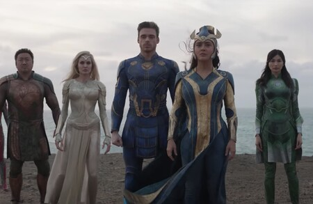
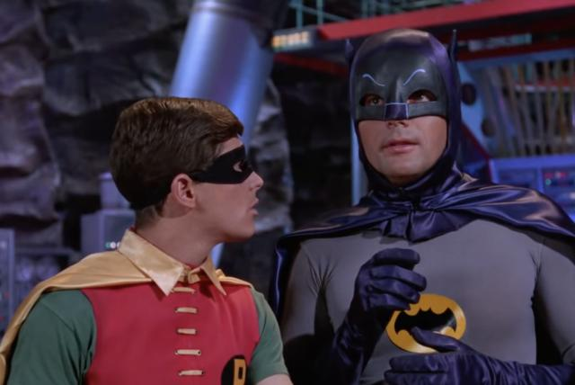
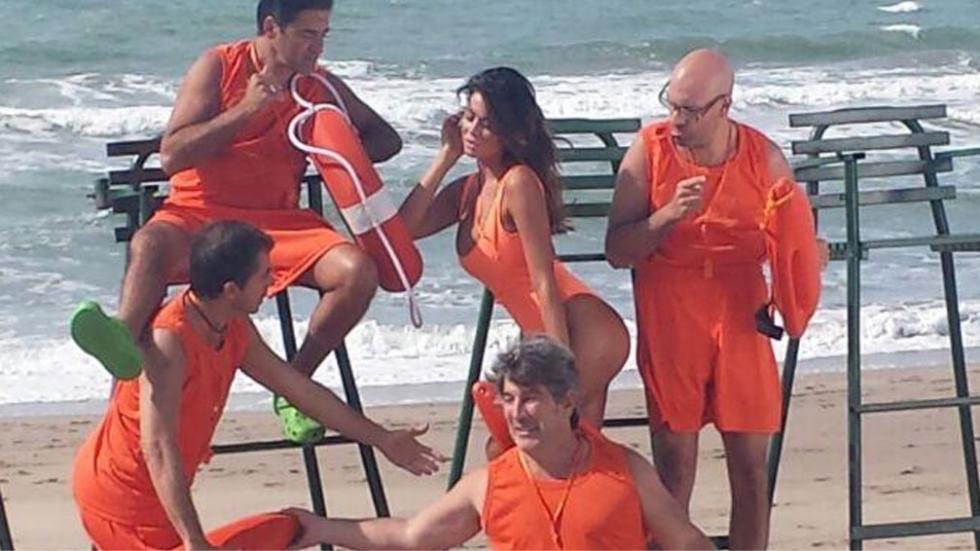
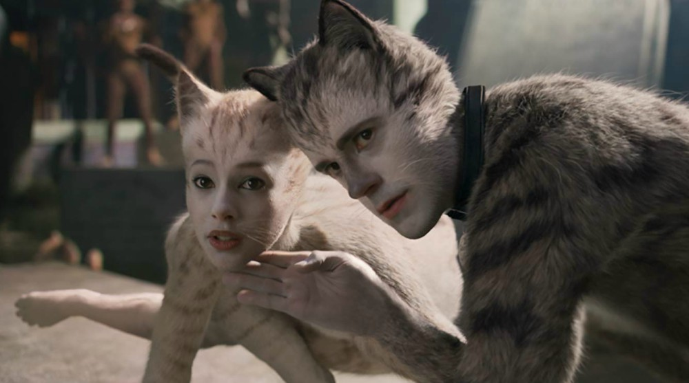
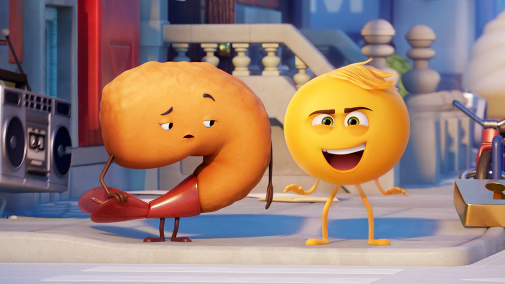
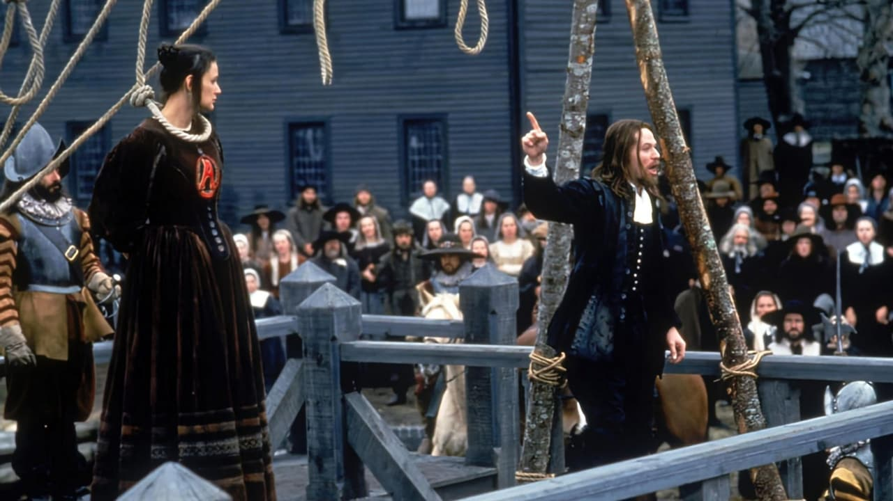
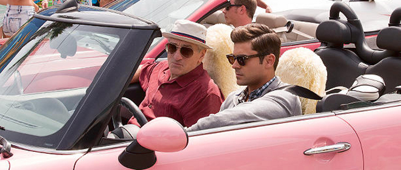
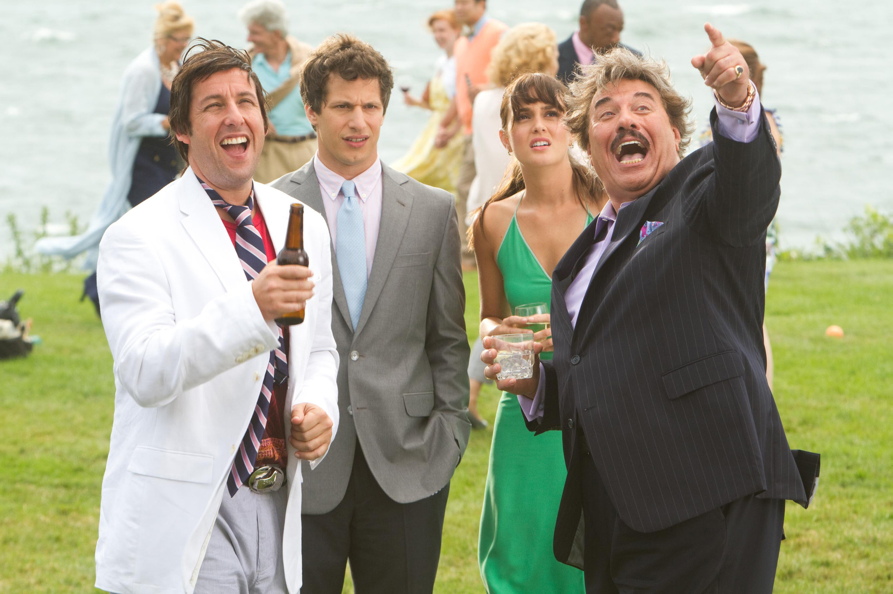
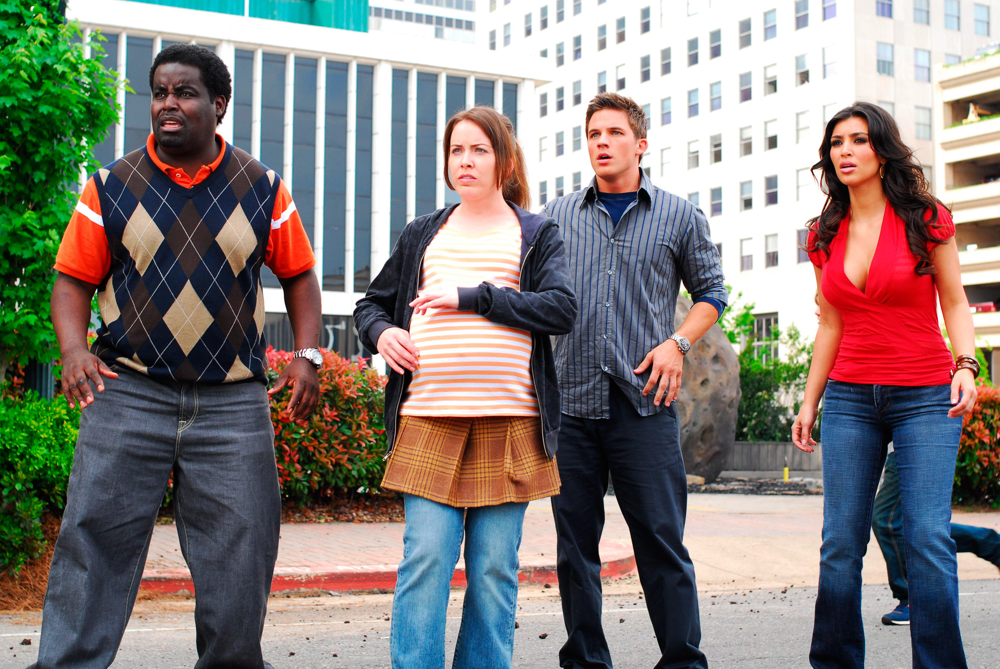
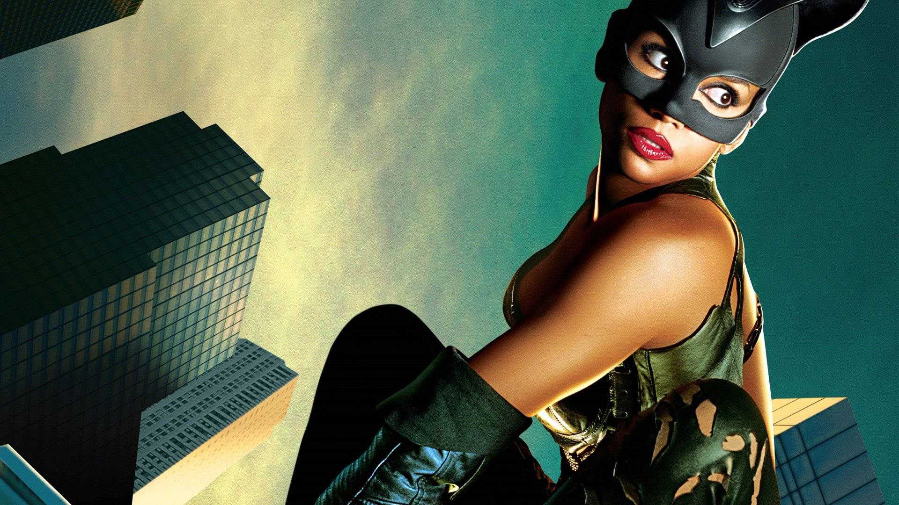

Eternals
La peor película de Marvel jamás rodada. La oscarizada Chloe Zhao desbarranca con un proyecto demasiado grande y alejado de su cine, probablemente la peor entrega del Universo Marvel que esta crítica ha visto.
Batman y Robin
Cuarta y última película de la saga de Batman de Tim Burton y Joel Schumacher. El filme, dirigido por Schumacher, sufrió fuertes interferencias por parte del estudio para hacerlo más comercial e infantil, apto para niños y orientado a favorecer la venta de juguetes, lo que hizo que fuera rechazado por críticos y fanes. Debido a la mala recepción, la quinta película planeada, Batman Triumphant, nunca fue realizada y el universo cinemático se reinició con el reboot Batman Begins, de Christopher Nolan, estrenado en 2005.
Bañeros 4: Los Rompeolas
Comedia argentina dirigida por Rodolfo Ledo, es considerada por la prensa de su país como la peor película argentina de la década de los 2010s. La película está mal editada, tiene "muchos" errores de continuidad y se llega a ver los micrófonos. Tiene una puntuación de 1.7 en FilmAffinity.
Cats
Esta adaptación de la obra musical del mismo nombre estrenada en diciembre de 2019 recibió una avalancha de críticas negativas, recibiendo solo 18% en Rotten Tomatoes y 32 en Metacritic. La crítica especializada criticó entre otras cosas el guion y los efectos especiales deficientes que provocaron en muchos espectadores un efecto de Valle inquietante y que fueron descritos como horrorosos y catastróficos. La película además de la mala crítica fue un fracaso de taquilla y ganó 6 premios Razzies incluyendo Peor Película.
Emoji: la película
Nominada a diez premios Razzies, ganó cuatro de ellos incluyendo el premio a peor película, siendo la primera película animada en ganar esta categoría en 38 años. Acusada de un emplazamiento publicitario cínico, los críticos también la calificaron de "aburrida" e "idiota". Calificada con 3.3/10 en IMDb y en Rotten Tomatoes con 7% según la crítica y 38% según la audiencia, tiene un consenso negativo.
La letra escarlata
Basada en la novela homónima de Nathaniel Hawthorne, dirigida por Roland Joffé y protagonizada por Demi Moore y Gary Oldman. La película recibió críticas generaalmente negativas y fue un fracaso en taquilla, recaudando 10,4 millones de dólares frente a un presupuesto de 46 millones de dólares. La película fue nominada a siete premios Razzies, ganando únicamente el de Peor adaptación o secuela. Actualmente posee un 13% de aprobación en Rotten Tomattoes.
Dirty Grandpa
Película estadounidense escrita por John Philips y dirigida por Dan Mazer. Es protagonizada por Zac Efron, Robert De Niro, Joseph Jimrey y Zoey Deutch. La película trata de un abuelo y su nieto que van a Florida de vacaciones de primavera para la boda de este último, recibió críticas negativas por su humor grosero que también fue considerado sexista, homofóbico y racista. En Rotten Tomatoes tiene un 11% de aprobación basada en 110 reseñas, con una puntuación de 2.8/10. La página Metacritic le ha dado a la película una puntuación de 18 de 100, basada en 21 críticas, indicando "abrumadoramente odiada". Y fue nominado a varios Razzies, pero no ganó ninguno
That's My Boy
Otra película de Adam Sandler que padeció de un rechazo casi universal de la crítica especializada por su tratamiento de temas como el incesto, la efebofilia, la violación y la gerontofilia,25 256 257 esta película cómica relata la vida de un padre que concibe un hijo a los 12 años con su maestra de primaria. Fue nominada a los Razzies a peor película, peor director, peor guion y peor actor, ganando en las dos últimas.
Disaster Movie
Una de las ya infames parodias de los directores Jason Friedberg y Aaron Seltzer (coautores del guion para Scary Movie), conocidos por hacer parodias poco exitosas críticamente como Epic Movie y Meet the Spartans, las cuales poco tienen que ver con la película que parodian y se limitan a realizar "gags" basados en los tráileres de la mayoría de películas que se estrenan ese año, Disaster Movie fue particularmente brutalizada por la crítica aún para sus estándares. Se la ha descrito a menudo como una de las peores películas jamás hechas y apareció en la lista de las 50 peores películas de la revista Empire.
Catwoman
Interpretada por Halle Berry, esta película estuvo planeada originalmente como un spin-off de la película Batman Returns, con Michelle Pfeiffer como la antiheroína de DC Comics. Sin embargo, con el paso del tiempo el papel fue dado a Berry y el personaje fue cambiado para que el personaje no fuera Selina Kyle, sino una heroína genérica llamada Patience, sin relación con el universo Batman, estableciendo que la "Gatúbela" puede ser cualquier mujer que adquiere poderes mágicos felinos. El resultado fue un filme destrozado por la crítica y que fracasó en taquilla. Recibió varios Razzies, incluyendo el de peor actriz, que fue recibido por Berry en persona.